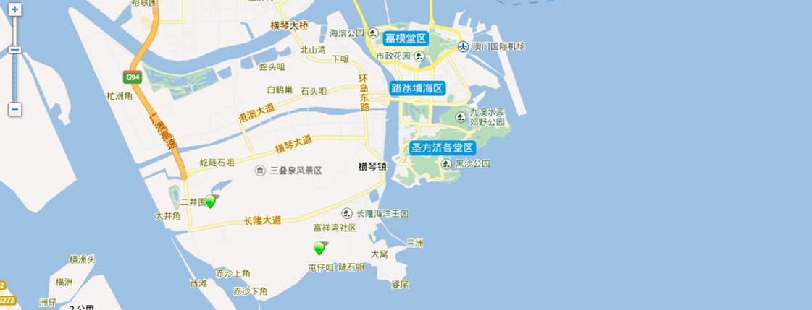
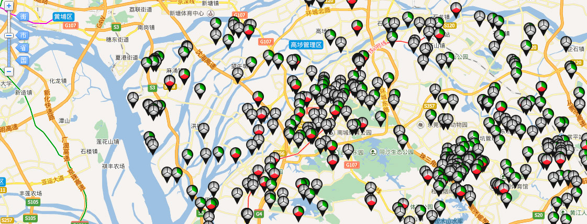

经典案例展示

2015年7月珠海市已全市推行广东省建筑从业人员实名制管理系统，运用于资质技能、工作轨迹、到岗记录、薪资发放、诚信评价等方面。珠海市实名制针对行业中的管理人员、特种作业人员、劳务人员，通过二代身份证、虹膜、手机SIM卡进行身份认证，采集个人实名制身份信息。项目到银行开设预储金账户，根据从业人员的实名制考勤记录发放工资。对于没按时缴纳预储金的项目和没按时发工资的项目，系统会进行预警提示，以方便监管部门监督。
珠海实名制系统实施以来，截止2016年29日，系统已存档38608人实名制从业人员，实发金额99,799,865.93元，考勤记录417828条。

横琴位于珠海市南部，地理位置极为优越，随着横琴自贸区的规划建设不断深入，众多建筑项目正如雨后春笋般拔地而起。目前，横琴区在建项目70余个，预计未来五年内每年开完工项目在60-80个，建筑总量保持稳中有增的态势。
基于横琴信息化管理工作需求，针对当前建筑行业管理特点，将建筑行业企业信息库、项目信息库、人员信息库、特种设备信息库等现有数据平台融汇合一，建立横琴新区智慧工地监管指挥平台，将施工现场的视频监控、塔吊运行监控、车辆出入监管、劳务人员实名制管理和噪音扬尘等多种和施工现场安全息息相关的信息纳入平台管理范畴，提升现场安全监管水平，同时对在本区务工的建筑从业人员进行安全生产教育培训和实名制信息采集，提高从业人员的安全生产意识，进一步减少安全生产事故的发生，为横琴建筑行业的健康发展保驾护航。

东莞市建设工程安全监督综合管理服务平台建设工程安全监督综合管理服务平台是以建设工程项目为核心，将各级监管部门现有信息化系统通过整合及数据接口同步导入的方式，整合大量建筑项目施工现场数据信息，实现施工现场的动态监管，工作小组随机产生和监督任务自动委派，通过对静态存储在平台中的数据进一步挖掘，实现智能化的事务提醒。监督员通过平台能处理与项目施工现场安全管理相关的所有工作内容，简化了监管部门的日常工作实现“随机派单、移动执法；随机派单、网上办事” ，提高监督工作效率，加强廉政建设。
 腾晖科技重大资产重组工作取得实质性进展
为充分运用资本运作平台，优化公司产业结构，促进公司发展，腾晖科技自2015年11月因筹划重大资产重组
腾晖科技重大资产重组工作取得实质性进展
为充分运用资本运作平台，优化公司产业结构，促进公司发展，腾晖科技自2015年11月因筹划重大资产重组